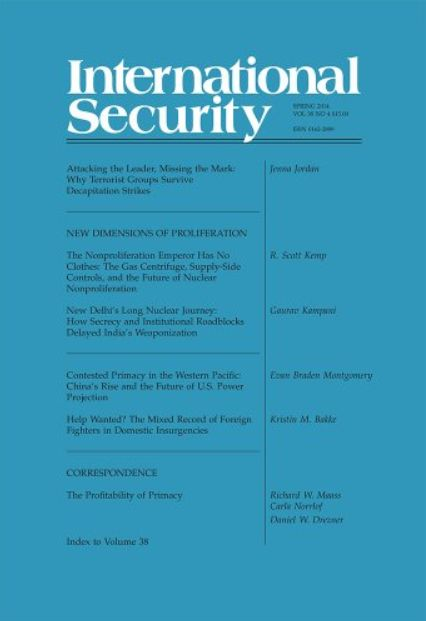
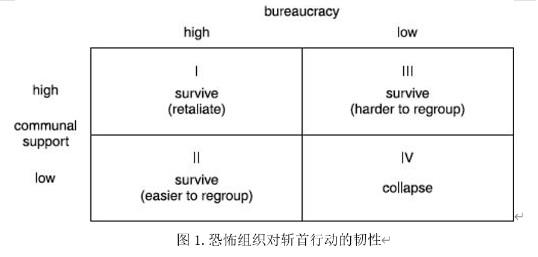

收录于合集

作品简介
【作者】 珍娜·乔丹（Jenna Jordan），佐治亚理工学院萨姆·努恩国际事务学院国际事务助理教授，研究兴趣包括恐怖主义、人口迁徙、领土依附与国际安全，主要的研究项目是针对恐怖组织的斩首行动。
【编译】 邵良（国政学人编译员，中国人民大学）
【校对】 刘颖哲
【审核】 姚寰宇
【排版】 李佳霖
【文章来源】 Jordan, Jenna. (2014). Attacking the leader, missing the mark. International Security, 38 (4), 7-38.
https://www.mitpressjournals.org/doi/full/10.1162/ISEC_a_00157
期刊介绍

《国际安全》（International Security）于1976年创立，是国际和国家安全领域的顶级同行评议学术期刊，以季刊形式发行。由哈佛大学贝尔弗科学与国际事务中心（Belfer Center for Science and International Affairs at Harvard University）编辑，麻省理工学院出版社（MIT Press）组织出版。根据2018 Journal Citation Reports，其影响因子为4.500，位列“国际关系”类别期刊第二位。
刺杀敌酋，无济于事
为什么恐怖组织在斩首行动之后还能生存？
Attacking the Leader, Missing the Mark
Why Terrorist Groups Survive Decapitation Strikes

Jenna Jordan
内容提要
斩首行动已成为时下美国反恐政策中的一面旗帜。学术界和政策制定者都认为，针对恐怖分子头目的斩首行动是打击恐怖主义的灵丹妙药。但是为现有的实证研究所不能解释的是，斩首行动最终往往收效甚微。组织韧性理论（theory of organizational resilience）解释了为什么斩首行动会使得某些恐怖组织衰落，却不影响另一些恐怖组织的生存。组织韧性取决于两个变量：官僚化程度和社区群众支持程度。规模较大的组织通常官僚化程度较高，这使得其组织头目的更替规则清晰有序，提高了组织的稳定性以及抵御斩首行动的能力。社区群众的支持可以给恐怖组织的运作和生存提供所必需的资源。宗教和分裂主义组织通常会获得其所在社区群众的热烈支持，进而获得重要资源。本文将该理论模型用于研究基地组织，发现本·拉登（Osama bin Laden）的死亡以及随后针对基地组织的其他斩首行动都不太可能撼动该组织的根基。
文章导读
一 、 导论 ****
斩首行动能消灭恐怖组织吗？美国能否通过抓获或击毙领导人来消灭诸如基地组织这样的恐怖组织？斩首行动已成为美国反恐政策的核心。许多学者和分析家声称，斩首行动对削弱恐怖组织有生力量、降低其威胁程度来说行之有效。毫不奇怪，他们把2011年5月2日在巴基斯坦阿伯塔巴德（Abbottabad）击毙本·拉登（Osama bin Laden）的事件视作对奥巴马（Barak Obama）总统以及更广泛的反恐战争来说的一项重大战术胜利。 尽管这项行动以及随后针对基地组织头目的袭击取得了成功，但长期来看，斩首行动难以削弱基地组织的有生力量，甚至可能导致截然相反的后果 。
自“911”恐怖袭击以来，美国已经击毙或抓获了许多基地组织头目。这些行动都是普遍针对该组织的斩首行动的一部分。为了达成目标，美军实行了多种军事行动，包括特种作战部队的突袭。伊拉克的基地组织头目本·拉登和阿布·穆萨布·扎卡维均遭到袭击。2012年10月5日，美军在利比亚的一次突袭行动中逮捕了基地组织头目阿布·阿纳斯·利比。美国还频频使用无人机来打击基地组织头目以及阿富汗、巴基斯坦和也门的其他激进分子。
2012年6月，美国中央情报局在巴基斯坦以无人机空袭的方式击毙了时任基地组织副领导人的阿布·亚哈·利比（Abu Yahya al- Libi）。经验丰富的利比在组织内发挥了重要的职能，学者和政策制定者将他的死亡视为对已被削弱的基地组织的沉重打击。九个月前，一枚由美国无人机发射的地狱火导弹击毙了与许多恐怖分子阴谋有关的美籍也门裔神职人员安瓦尔·奥拉基（Anwar al-Awlaki）。据称是基地组织的第二头目的阿提亚·阿卜杜勒·拉赫曼（Atiyah Abd al- Rahman）也在巴基斯坦的一次无人机袭击中丧生。拉赫曼在本·拉登与基层人员之间起着重要的沟通作用。伊利亚斯·卡什米里（Ilyas Kashmiri）曾是基地组织的高级成员，也是伊斯兰圣战运动（Harakat-ul-Jihad al- Islami）的作战指挥官。2011年6月3日，他在南瓦济里斯坦（South Waziristan）也死于的一次无人机袭击。这些都是美国在过去几年中使用无人机空袭打击基地组织头目的例子。
尽管美国在上述例子以及其他一些例子中成功实施了斩首行动，基地组织仍然春风吹又生。 本文使用了组织韧性理论，研究了为什么针对基地组织头目的斩首行动用处不大，甚至很可能起到反作用。恐怖组织抵抗斩首行动的能力取决于两个因素：官僚化程度和社区群众支持程度 。 通过分析何时以及为什么某些恐怖组织在斩首行动后还能生存，本文提供了一个更细微的视角来评估反恐政策的有效性，以此弥补已有研究的不足。
分析如下：首先，作者讨论了有关斩首行动有效性的已有研究。其次，作者提出了一个恐怖组织抵御斩首行动能力的理论。第三，作者使用这一理论研究基地组织。第四，作者评估了有关针对基地组织的斩首行动的有效性的经验证据。最后，作者将讨论上述发现对美国反恐政策的意义。
二、 关于斩首行动有效性的已有观点 ****
关于斩首行动有效性的文献集中在五个领域：恐怖分子头目扮演的角色、情报、组织结构的作用、各种定量研究发现以及斩首行动引发的适得其反的后果。
首先，对斩首行动有效性的大部分乐观估计都建立在理论上，这些理论分析了斩首行动的目标人物在其组织中的作用。 例如，领导者个人魅力理论（Theories of charismatic leadership）认为，恐怖组织多大程度会受到斩首行动的影响，取决于其头目自身的人格魅力。人格魅力不仅维持了组织头目本人权力的合法性，也使得追随者相信这样的领导人是不可替代的。但是，领导者个人魅力理论忽视了组织性质和社会背景的影响。
其他研究则考察了恐怖组织头目对组织实力和凝聚力的贡献。根据布莱恩·普赖斯（Bryan Price）的说法，恐怖组织是基于价值观的秘密组织，因此其组织头目的更替十分困难。暴力组织更具凝聚力，并且通常由个人魅力型权威的头目领导，因此其组织头目的更替更加困难。秘密组织比非秘密组织更依赖于其组织头目，而出于战略和个人原因，这些组织头目不太可能将其组织制度化，从而使得组织头目的更换更加复杂。最后，由于恐怖组织的存在是基于价值观的，其组织头目更难被替换。一旦替换，则会引发不稳定。普赖斯提供了一个关于斩首行动的理论解释，但是他的模型并未考虑斩首行动有效性的变化。由于将所有恐怖组织视为价值观驱动的组织，他的理论高估了成功率。组织头目的角色可能是评估斩首行动削弱恐怖组织实力效果的另一个预测指标。迈克尔·弗里曼（Michael Freeman）认为，斩首行动的成功概率取决于组织头目是否具有运营或鼓舞性角色。组织头目兼具运营和鼓舞性角色的组织在斩首行动后最有可能崩溃。弗里曼称，尽管个人魅力型权威的组织头目所带领的组织更易受到斩首行动影响，随着时间的流逝，面对此类攻击，它们会变得更加制度化而且更加坚韧。
其次，斩首行动可能会破获有关恐怖组织活动的关键情报，进而削弱组织的实力。 例如，秘鲁当局在抓获 “光辉道路”组织头目阿维马埃尔·古斯曼（AbimaelGuzmán）时发现了一些文件，这些文件使得该组织的其他成员也被抓获。被抓获的组织头目可以提供有关其组织的位置、实力、人事和行动的信息。
第三，一些研究发现组织结构与组织稳定性有关。 凯瑟琳·卡利（Kathleen Carley）等人认为，去中心化的组织比等级制的组织更难撼动。马克·萨奇曼（Marc Sageman）提出，对于某些组织结构来说，组织头目可能不是正确的目标。在一项针对全球伊斯兰原教旨主义圣战的研究中，萨奇曼认为，社交网络为社会和地理上孤立和疏远的个人提供了加入共同群组的机会。在这些群组中形成的社会纽带建立并加强了潜在激进分子的意识形态认同，鼓动他们加入圣战组织。 这些群组的去中心性和地方性使其难以被打击。
第四，关于斩首行动的定量研究在行动是否有效以及何时奏效方面存在分歧。 普赖斯发现，斩首行动会增加恐怖组织的死亡率。帕特里克·约翰斯顿（Patrick Johnston）的结论是，斩首会降低恐怖袭击的强度和频率，增加结束战争的机会，并使得政府更有可能获胜。约翰斯顿声称，斩首可以“破坏已经经历了长期而且艰苦斗争的叛乱组织的士气”，它作为大型反恐行动中的一部分更为有效。尽管约翰斯顿的统计发现是有力的，他的文章缺乏关于斩首行动的理论探讨：它没有解释为何斩首行动是有效的、斩首行动如何影响组织的运作能力，以及各国什么时候应该或什么时候不应该对激进组织进行打击。此外，约翰斯顿只关心叛乱组织。尽管一些恐怖组织也是叛乱组织，但许多叛乱组织并未采取恐怖组织的战术。
第五，一些研究认为斩首行动可能适得其反。 意想不到的负面后果包括殉道效应的产生、新人招募的激增、报复性袭击的发生、组织决心和力量的增加以及袭击频率和强度的上升。
三、 组织韧性理论 ****
在本章中，作者提出了一个理论来解释为什么一些恐怖组织在斩首行动后仍能生存，而另一些则不能。“组织韧性”是指遭到破坏后的一个恐怖组织是否仍然可以从事恐怖活动。 恐怖组织的组织韧性是两个变量的函数：官僚化程度和社区群众支持程度。斩首行动绝不会使得高度官僚化或受到社区群众热烈支持的组织解散，因为在这种情况下领导者的重要性不足。 官僚化程度较高并且受到社区群众支持的组织更难被斩首行动撼动，而且在这种情况下，斩首行动的很可能导致适得其反的负面后果。
（一）官僚化如何增强组织韧性
组织韧性理论认为，恐怖组织官僚化的程度影响了斩首行动导致其灭亡的可能性。官僚化的恐怖组织是多种多样的，这些组织对内部的管理责任和职能有明确的划分，遵循规则和程序，因此更有可能承受一个或多个领导人的突然消失。由于规模更小，年头更短和意识形态色彩更浓的组织更不易官僚化，它们更有可能无法抵御斩首行动。
官僚机构具有普遍性的规则，这些规则在组织内部委派职责时至关重要。米歇尔·克罗齐耶（Michel Crozier）认为，“非人格规则”通过详细界定组织内每个人的职能来建立一种自我强化的平衡。这些规则规定了针对所有可能事件的应对行为。马克斯·韦伯（Max Weber）认为，权威、规则和职能的清晰划分使官僚机构成为大规模行政管理的最有效形式。
官僚化的稳定性
官僚机构能够提高组织稳定性和效率，从而使其更能抵抗斩首行动。首先，它们的特点是组织多元化，并且在职责和权力之间保持清晰的界限。 随着组织越来越大，越来越复杂，越来越专业化，他们很可能会发展多元化的职能，从而提高其稳定性。彼得·格林耶尔（Peter Grinyer）和马苏德·亚塞·阿德卡尼（Masoud Yasai- Ardekani）发现，随着组织规模的扩大，一个组织将变得更加多元化，其结构将更加复杂。组织的多元化反过来又有助于建立可靠和多元化的资源基础，这对于维持恐怖组织的活动是必不可少的。戴维·维尼斯（David Veness）指出，拥有多元化资金来源的恐怖组织的存活率更高。在讨论具有不同职能的分支机构、成立时间较久的恐怖组织时，乔迪·维托里（Jodi Vittori）认为，组织越大，其资金来源越容易变得多元化。
其次，官僚机构建立了可以提高组织稳定性和效率的规则和制度。 根据玛莎·费尔德曼（Martha Feldman）和布莱恩·彭特兰（Brian Pentland）的研究，制度是“组织完成其大部分工作的主要手段。”芭芭拉·莱维特（Barbara Levitt）和詹姆斯·马奇（James March）认为，制度可以提高组织的学习能力，进而可以提高组织的能力和效率。制度提高组织稳定性的表现之一则是，组织能够在组织头目离开后生存下去。没有建立制度的组织将努力奋斗，直到其成员和所在的社区群众认为它们是可靠的和负责任的为止。
高度官僚化的恐怖组织更有可能经历平稳的权力交接。因此，等级制结构的组织更难因为组织头目的突然消失而变得不稳定。在这些组织中建立的清晰的职责分工让每个成员都能各司其职，进而使得他们得以在组织头目消失后继续工作。规则和制度减少了组织对其头目的依赖。由于组织的运作是制度化的，因此组织头目的突然消失理论上难以对目标组织的组织能力产生持久影响。
评估官僚化程度和恐怖组织
和官僚机构一样，许多恐怖组织都是等级制的：他们的权威来自高层；他们有行政管理人员；他们遵守规则和制度；并且它们保持功能独立的分支机构和基础架构。恐怖组织之类的秘密组织也可以按照官僚机构的方式组织自己。例如，他们可能会保留与其成员、财务和活动有关的文件。恐怖组织的文件可能揭示该组织的组织结构。例如，一些恐怖组织保留成员个人花名册、不同成员在组织中的等级、会计信息以及组织结构图。这些文件提供了制度化规则和操作程序的证据。
如果恐怖组织内部存在分化的政治、军事和社会分支，它已经变得更加复杂，能够履行不同的职能。 哈马斯和泰米尔伊拉姆猛虎解放组织就是这样的两个例子。恐怖组织经常通过其社会或政治分支向其所居住的社区提供社会服务，这是他们获得支持的重要手段。有效的基础设施对于有效地向当地社区提供社会服务是必要的。因此，提供社会服务应该表明一个组织已经有了足够的官僚化程度来控制管理基础设施。反过来，这种基础设施可以提高组织在斩首行动之后的复原能力。
年头更长，规模更大的恐怖组织更有可能已经发展出官僚化的特征，从而增强其稳定性、效率和抵抗斩首行动的能力。 根据亚瑟·斯蒂金科姆（Arthur Stinchcombe）的“新进入者缺陷”(liabilities of newness)论文，新组织失败的数量要多于老组织。这一理论为年头更长，规模更大的恐怖组织应该更稳定这一假设提供了理论基础。斯蒂金科姆认为，一个组织成立时间越长，它越有可能制定出规则和制度来弥补与新进入者缺陷相关的损耗，从而降低组织失败的可能性。商业管理研究发现，无论团队最初的组织蓝图是什么，组织成立的时间和组织的规模都与官僚化程度正相关。
由于恐怖组织天生是秘密组织，并且经常受到反恐行动的威胁，因此，建立稳定的官僚机构的需求与组织的保密需求之间存在矛盾。尽管如此，许多恐怖组织，包括“光辉道路”和哥伦比亚革命武装力量，都已高度官僚化。一些恐怖组织，例如哈马斯，在较高级别上是等级制的，同时在行动级别上保持去中心化的网络。这些特征使许多恐怖组织对反恐行动具有极大的抵抗力。
如前所述，许多有关斩首行动的有效性的传统观点都基于领导人个人魅力理论。即使恐怖组织依靠其头目的个人魅力，个人魅力也可能被制度化，最终导致官僚形式的权威。制度化为招募新人建立了规范和规则，消除了权力交接问题。此外，制度化的组织可以通过发展对于提高税收和捐献必不可少的经济条件来满足组织的需求。这一点对于恐怖组织至关重要，恐怖组织必须在保密的同时筹集资金。
（二）社区群众支持如何提高组织韧性
社区群众的支持对于在组织头目遭受袭击后恐怖组织是否仍能维持组织实力和能力至关重要。获得社区群众热烈支持的组织可以更轻松地获得开展有效的暴动所需的资源。 包括罗杰·彼得森（Roger Petersen）和斯科特·阿特兰（Scott Atran）在内的学者认为，有效的暴动需要大量的社区群众支持。激进组织已经意识到了当地社区群众支持的重要性。获得社区群众支持的组织可能会被其所在社区视为合法组织，从而进一步增加了他们实力和效率。 因此，平叛战略已经集中于赢得民心以减少群众支持叛乱的欲望。 这种方法的基本思想是，通过平反冤案，平叛的一方将获得当地社区群众的支持，否则当地社区群众就会帮助叛乱分子。因为宗教和分裂主义组织通常代表着他们所在社区的观点和信仰，因此他们应该比意识形态驱动的组织更容易获得社区群众的热烈支持，这使得意识形态驱动的组织更不稳定。
社区群众支持和组织稳定性
社区群众支持在许多方面都对恐怖组织的信念和稳定有所贡献。 它使该组织能够招募新人、筹集资金、提供关键资源，确保其作为秘密组织运作的能力，鼓励更多暴力行为并保持政治和意识形态的相关性。 首先，支持某一组织的社区群众可以为其提供有用的信息以及兵源。 彼得森（Petersen）认为，当地社区提供的资源、信息和兵源对理解叛乱何以成功这一问题来说至关重要。在一项有关自杀式恐怖组织的研究中，罗伯特·帕佩（Robert Pape）指出，群众支持可以“使自杀式恐怖组织成为现实”。此外，阿特兰指出，尽管获得社区群众支持的理由可能有所不同，但“没有社区群众支持，需要依靠密集的族裔和宗教联系网络来获取信息、招募新人和生存下去的恐怖组织就无法蓬勃发展。” 社区群众的支持不仅对组织能否成功达成目标来说不可或缺，也对他们的日常运作至关重要。
其次，社区群众可以帮助恐怖组织避免被当地社区的安全部队“侦查，监控和歼灭”，进而使得其能够暗中行动。 因为斩首行动可能在社区内激起民愤，居民可能会以给目标人物提供藏身之处的方式作为相应的报复。
第三，社区群众对暴力行为的支持可以鼓动恐怖组织开展更多的暴动。 米娅·布鲁姆（Mia Bloom）指出，当社会支持杀害平民时，恐怖组织就有采取这种战术的动机。此外，恐怖组织关注社会认可并寻求合法性以提高其相对于敌对武装团体的地位。里沙·布鲁克斯（Risa Brooks）指出：“武装分子所在的社区迫使武装分子遵守有关如何使用暴力的社会规范。”社会对暴力的宽容为恐怖组织提供了人身安全、情报和防御资源，可以帮助他们隐藏战斗人员和建设基础设施。
第四，社区群众支持有助于恐怖组织保持其政治或意识形态相关性的能力。 当地社区群众可能会对该组织的意识形态或目标失去兴趣，从而毁坏其根基。这解释了许多极左组织的衰落。宗教和分裂主义组织所基于的意识形态并不依赖于特定的团体或领导人。因此，失去公众兴趣对宗教组织的危害较小，因为宗教组织意识形态的吸引力不受当地社区限制。
第五，当地社区群众的支持对于获取使恐怖组织能够运转的资源至关重要。 资源动员理论可以提供一种方式来理解社区群众支持和资源对恐怖组织的重要程度。社会运动组织需要资源来调动集体行为，以“维持其活动并（或）激励人们为自己的事业做出贡献。”社区群众支持水平较高的群体应该比支持程度较低的群体获得更多的资源。梅耶·扎尔德（Mayer Zald）和罗伯塔·阿什（Roberta Ash）认为，社会运动组织的环境由两个要素组成：（1）包括其认同者在内的更广泛的社会运动，以及（2）社会运动所在的社会。这种组成基础决定了“组织的情绪起伏”，对于组织的成功至关重要。而且，由于社区群众控制着一个组织的资源池的大小，在社区群众支持下获得更多支持的组织理论上拥有更大的群众基础，从而可以支配更多的资源。最后，将社会运动的成功归因于政治机会的政治过程理论进一步强调了社区群众对叛乱的支持的重要性。道格·麦克亚当（Doug McAdam）指出：“原住民结构经常提供社会运动背后的组织基础”。他确定了对叛乱组织活动至关重要的四种资源：成员，团结激励，沟通网络和领导者。这些资源促进了政治行动，确保了组织的生存，特别是在应对针对该组织的镇压时。
评估社区群众对恐怖组织的支持
第一，向当地社区提供社会服务的恐怖组织可能会赢得更多的公众支持，从而提高其公众形象。 向居住在加沙地带和约旦河西岸的巴勒斯坦人提供社会服务的哈马斯就是一个有用的例子。在开创提供关键教育、社会计划和宗教服务的地方网络的过程中，哈马斯已经建立了组织良好、运作顺畅的基础设施，这使其能够获得用于政治活动的资源并获得源源不断的支持。能够提供社会服务的组织不仅更具韧性，而且更加高效。
第二，社会对暴力的容忍度可以作为民众支持的指标。霸道的反恐战术可以增加公众对恐怖分子事业的支持。 布卢姆（Bloom）认为，国家对恐怖主义的应对方式将对自杀式炸弹袭击者能否赢得更多民心产生影响。更笼统地说，她认为“某些国家的一些更霸道的反恐战术，例如对恐怖主义支持者的先发制人的攻击，可能适得其反，导致更多人支持恐怖主义。”
第三，民意调查也能用于评估社区群众对恐怖组织的支持。 诚然，在这方面，民意调查数据的使用有明显的限制。例如，在基地组织这一案例中，该组织活动范围下的许多国家的数据都难以获取。另一个问题是，大多数调查数据都难以随时间收集，这使得研究人员很难确定对基地组织和交战状态的态度和支持会如何变化。此外，总体而言，受访者表达对基地组织和战斗性（Militancy）的真实感受时可能会感到不舒服或不安全。考虑到战斗性对组织韧性的贡献，尝试评估民意数据还是有用的。
某些类型的组织比其他组织更受欢迎。 实际上，组织类型可以作为社区群众支持的指标。 作者认为，分裂主义组织和宗教组织应比意识形态组织得到更多的支持，因为他们更容易复制其组织所依据的学说。相比之下，意识形态组织的学说通常取决于这些群体、其头目或特定时期所独有的一套信念。例如，“光辉道路”坚持古兹曼的极端暴力和毫不妥协的革命路线。其他组织倾向于代表他们故乡社区的少数派观点。这些观点通常非常边缘化，使得个人领导者的角色对于提升组织的价值观和信念更加必要。
尽管恐怖组织的战术可能比许多社区群众所期待的更为激进，他们的信仰常常得到广泛的支持。 以分裂主义为信仰的恐怖组织代表了这些社区获得某种程度的自治或独立的愿望。他们的意识形态反映了使这些组织得以产生和运作的社区的总体民意。 与宗教组织一样，这种嵌入性（Embeddedness）让分裂主义组织获得了大量的当地群众支持，使其更有可能在其活动所在的社区中获得合法性。斩首行动可以进一步增加当地社区群众对恐怖组织的支持，从而引发适得其反的负面后果。下一节探讨了官僚化与社区群众支持之间的相互作用，因为这与组织韧性和报复性回应的可能性有关。
（三）官僚化与社区群众支持之间的相互作用
官僚化和社区群众支持以多种方式相互作用。恐怖组织对斩首行动的反应是官僚化程度和社区群众支持水平的函数。 官僚化程度和社区群众支持水平很高的恐怖组织应该能够在斩首行动后幸存，并发起报复性攻击（见图一，第一象限）。 在这些情况下，组织头目的重要性降低了，而且组织在遭受此类攻击后更容易进行重组和重建。 第二象限中的组织（官僚化程度高，社区群众支持率低）以及第三象限中的组织（官僚化程度低，社区群众支持率高）也应能够在斩首行动后幸存。 第三象限中的组织与第二象限中的组织之间存在重要区别。第二象限的组织在经历破坏稳定的斩首行动后应该更易于重组和重建，而第三象限的组织应能生存，但重组期间可能会比较艰辛。最后，如果组织的官僚化程度和社区群众支持水平都很低（第四象限），那么它们很可能在斩首行动后崩溃。

官僚化需要一定的人员数量保障，这些人在表现出对组织的认同和能力之后可以“升官”。志愿人员和新兵通常难以在进入组织之前证明其能力。那些表现出更多认同、激情和专业知识的人就能往上爬。恐怖组织还基本上依靠招募新成员的能力来填补因人员被俘或被杀而造成的职位空缺。具有更多社区群众支持的组织将能够吸引组织再生所需的新兵。下一节将研究有关斩首行动的数据。
四、 斩首行动的实证研究 ****
为了评估斩首行动的有效性并确定斩首行动或多或少导致恐怖组织衰落的条件，作者创建了一个由298起实例组成的数据集，其中包含了92个在1945年至2004年期间经历了组织头目被逮捕或被击毙的恐怖组织。作者还对169个恐怖组织进行了调查，以确定经历过斩首行动的组织与没有经历过斩首行动的组织相比衰落的比率。 作者发现斩首行动不会增加组织崩溃的可能性。与直觉相反的是，没有经历过斩首行动的组织比那些经历过斩首行动的组织更有可能停止活动。 遭受过斩首行动的恐怖组织中有53％崩溃，而没有遭受过斩首行动的恐怖组织中有70％不再活跃。前者的衰亡率比后者几乎低了20％。
来自这项已有研究的数据支持了组织韧性理论中的预测。较大的、年头较长的、宗教的和分裂主义的组织，衰落的比率较低。数据表明，规模较大，历史悠久且宗教信仰浓厚的组织对于斩首行动具有高度的韧性。 这些群体水平变量（group-level variables）提供了一种方法来评估本文中考察的理论变量。组织的年龄和规模可以充当官僚化程度的指标，而组织的类型可以充当社区群众支持的指标。因此，来自先前实证研究的数据支持以下观点：最具韧性的组织应该最有可能高度官僚化并获得当地社区群众较多的支持。 那么，这些数据如何适用于基地组织这一案例？通过进行案例分析， 作者得出的结论是：基地组织的行为特征符合斩首行动难以奏效的组织类型。 基地组织的核心机构及其许多附属机构官僚化程度都较高，当地社区群众支持率也较高，这些都提高了该组织抵御斩首行动的能力。
**
**
五、结论 ****
自2001年以来，针对与基地组织有关的恐怖分子的斩首行动一直是美国反恐政策的基石。本文为何时实施斩首行动有效提供了理论解释。 官僚化程度较高的组织或获得大量社区群众支持的组织更易在斩首行动之后生存下去。
作者使用规模和成立年限作为官僚化程度的指标，使用组织类型作为社区群众支持程度的指标。通过使用这些指标，作者发现年头较长、规模较大和基于宗教信仰的组织比年轻、规模较小和基于意识形态的组织更容易抵御面临斩首行动时的不稳定。年头较长和规模较大的组织往往比规模较小或较年轻的组织官僚化程度更高，并且宗教和分裂主义组织比以意识形态为导向的组织更易获得地方社区群众的支持。
斩首行动不久，恐怖组织经常被暂时削弱，以至于一度影响其行动能力。在此期间，它将尝试重组其领导层。从反恐的立场来看，关键目标是防止该组织重建以及重新参与敌对活动。 通过对基地组织的调查，作者得出结论：针对基地组织的斩首行动不太可能导致其组织走向衰落或长期退化。它的官僚机构和受到的社区群众支持使其经受住了对其领导层的频繁的斩首行动。 尽管美国2001年对阿富汗的入侵以及随后为了击毙或抓获其主要领导人而做出的努力已经削弱了该组织，它已适应了不断变化的形势。此外，位于巴基斯坦的基地组织核心机构的削弱并不意味着其附属组织的衰落，而且可能鼓动其中一些组织提高其战斗性水平，以便在极端主义社区中获得更大的合法性。
无论斩首行动的有效性和潜在不利后果的可能性如何，美国都可能继续对基地组织头目发起斩首行动。因为美国决策者将击毙本·拉登以及其他基地组织高级头目的行动本身视为成功。但是，仅靠斩首行动最终不足以有效打击一个兵强马壮而且肆无忌惮的恐怖组织。
** 译后记** ****
作者在讨论恐怖组织头目的个人特质时，几乎只关注其个人魅力对组织凝聚力的影响，因此对官僚化程度着墨甚多，未免管中窥豹。历史上其他一些非恐怖组织政治实体的经典案例表明，战略决策能力也是一项对领导人来说很重要的个人特质，因为它决定了组织的前进方向。一个官僚化程度很高的政治实体，也可能因为领导人的战略决策能力不足而走向衰落甚至不攻自破。因此，译者大胆提出假设：本文实证研究的数据中，没有经历过斩首行动的恐怖组织比那些经历过斩首行动的组织更有可能衰落，是否很大程度上因为斩首行动淘汰了后者中一大批不善于战略决策的组织头目，进而使得其内部更加善于战略决策的组织成员有了掌权的机会？如果这一假设成立，那么斩首行动的有效性将因袭击目标的不同而显著不同。期待未来的相关研究。
_ ** _ ** _ ** _
本文由国政学人独家编译推荐，文章观点不代表本平台观点，转载请联系授权。**__